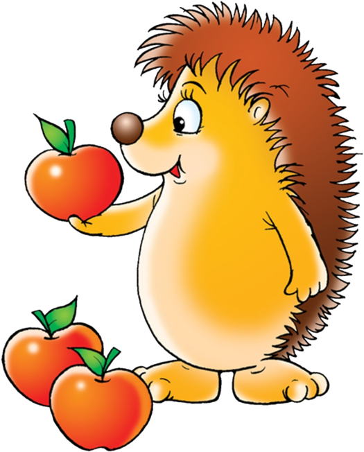
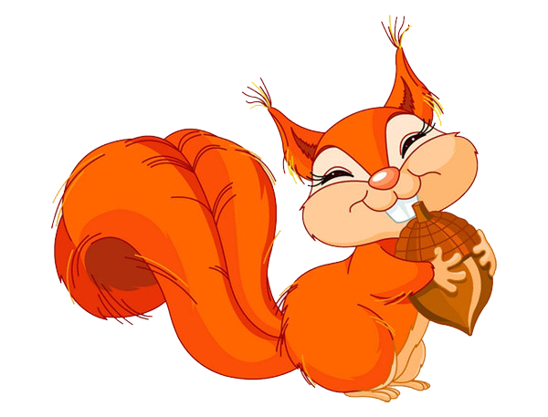

Лучший день!
Сегодня был самый лучший день в моей жизни! Я впервые покаталась на лошади на ипподроме. Со мной были моя мама, папа и моя тетя. Погода была прекрасная - солнечная и безветренная. Я давно мечтала покататься на лошади и сегодня моя мечта сбылась. Я сначала боялась сесть на лошадь, потому что она была такая большая и казалась очень сильной. Но моя инструкторша, молодая девушка, которая занималась конным спортом, успокоила меня и объяснила, как правильно садиться на лошадь. Когда я оказалась на лошади, мне стало очень интересно. Я почувствовала, как лошадь двигается подо мной. Это было просто потрясающе! Я чувствовала, как лошадь поднимает свои ноги и двигается вперед, а моя мама и тетя снимали это на видео. Мы катались вдоль трассы, я увидела множество красивых вещей - деревья, цветы, другие лошади и конечно же ипподром. Я чувствовала себя такой счастливой и свободной. Моя лошадь была очень дружелюбной и послушной, она даже не пыталась меня сбросить. Когда прогулка закончилась, я была очень грустной, потому что не хотела, чтобы все закончилось. Я сразу же захотела попробовать снова. Я благодарна моему инструктору за то, что она показала мне, как правильно кататься на лошади.
Этот день был настолько замечательным, что я никогда его не забуду. Я действительно люблю лошадей и надеюсь, что еще много раз смогу покататься на них. Большое спасибо моим родителям за этот незабываемый день!
Мы объявляем конкурс на лучший стишок о дружбе. Приз за лучший стишок - пачка Барни. Конкурс будет проводится с 3 по 7 апреля. И пожалуйста, не списывайте стихи друг у друга. А еще, не берите стихи А. С. Пушкина и других писателей!!!
Контактный тел.8 988 294 27 82 и whatsapp на нем.
Колонка редактора
Когда я впервые покаталась на лошади, у меня было много впечатлений. Я почувствовала, как она двигается. После этого всегда, когда я катаюсь на лошади я представляю, что это моя собственная лошадь. Я сама очень люблю лошадей: кобыл, коней.
Я сама не знаю почему, но есть предположение что я люблю лошадей потому, что я родилась в год лошади. Я не могу видеть, когда лошадей бьют плёткой. Это вызывает злость! Ну как, как можно бить таких красивых животных!!! Но, вы не думайте то я люблю только лошадей я ещё люблю пантер за их красивую окраску
Главный редактор
Ярахмедова С.А.
Рассказ
В лесу жил-был маленький ёжик по имени Шарик. Он был очень любознательным и всегда интересовался окружающим миром. Однажды он услышал, что в лесу живет загадочное существо - лесной дух, который может помочь ему в его путешествиях по лесу.
Шарик отправился на поиски лесного духа и встретил на своем пути множество зверей - зайцев, белок, енотов и даже медведя. Они все рассказывали ему разные истории о лесном духе, но никто не знал точно, как его найти.
В конце концов, Шарик встретил самого лесного духа, который оказался добрым и мудрым гномом Он подарил Шарику магический амулет, который помогал ему находить дорогу в лесу и общаться со всеми зверями на понятном им языке.
С этого дня Шарик стал настоящим героем леса, и исследуя его тайны и загадки помогал другим животным выживать. Иногда он встречался с лесным духом, и они подолгу разговаривали о жизни в лесу, о его красоте и удивительных обитателях, которые живут в нем.
Ежик продолжал путешествовать по лесу, где он встречал разных животных. Он любил слушать их рассказы и подолгу думал о том, что услышал. Некоторые из рассказов были очень поучительными и не привести их здесь было бы большой ошибкой.
Заяц рассказал Шарику о том, как он однажды заблудился в лесу и не мог найти дорогу домой. Но, к счастью, когда совсем отчаялся, он встретил другого зайца постарше - более опытного и мудрого, который научил его ориентироваться в лесу, и использовать знаки, оставленные другими зверьками, чтобы находить дорогу.
Белка рассказала Шарику о том, как она собирала орехи для своих зимних запасов и вдруг наткнулась на стаю голодных сорок. Она испугалась и замерла на месте, но тут же услышала громкий свист. Это был ее друг - хитрый енот, который помог ей отвлечь врагов и спастись.
Енот рассказал Шарику о своих приключениях с черепахой, которая никогда не расставалась со своим панцирем. Она поведала еноту, что ищет загадочный клад. Они вместе обошли весь лес, но так и не смогли найти его. В конце концов, они поняли, что настоящее богатство - это дружба и взаимопомощь.
Медведь рассказал Шарику о том, как он учился плавать в реке. Он страшно боялся воды. Но однажды встретил маленькую и шуструю рыбку, которая научила его, как правильно дышать под водой и плавать. Теперь медведь любит плавать в реке и учит этому своих медвежат.
Обдумывая услышанное, ежик пришел к выводу, чтобы выжить в лесу необходимо иметь много друзей и поддерживать с ними постоянную связь. А когда кто-либо из друзей попадает в беду, надо спешить на выручку, как бы страшно не было.
Автор намеренно оставил рассказ без названия. Кто придумает лучшее название, тот получит от редакции приз. Мы также призываем всех присылать интересные заметки в нашу газету. Об этом мы писали в предыдущих выпусках газеты, которые можно получить, отправив запрос по выше указанному whatsapp.